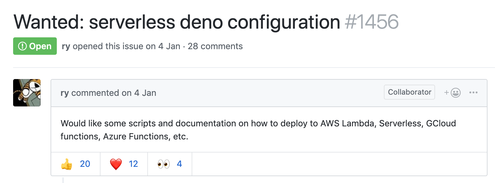
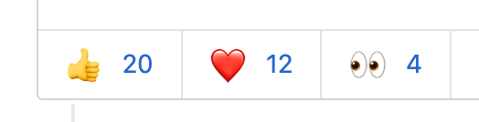
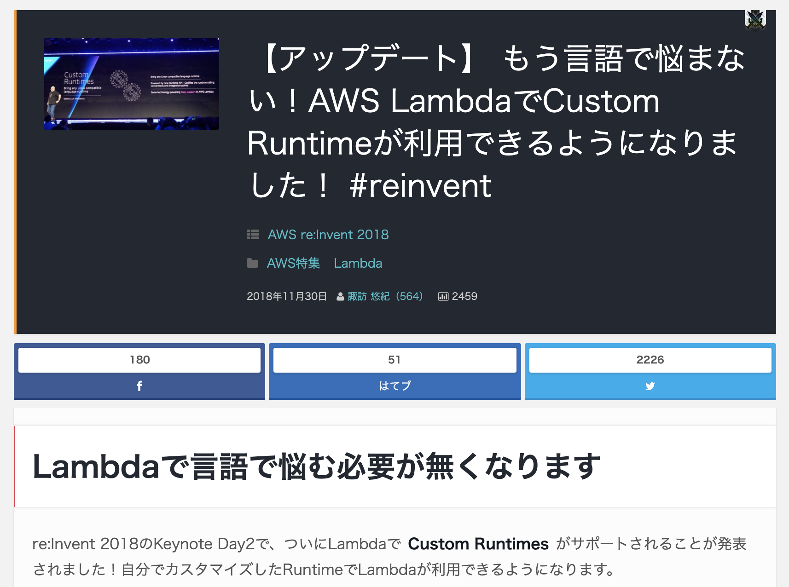
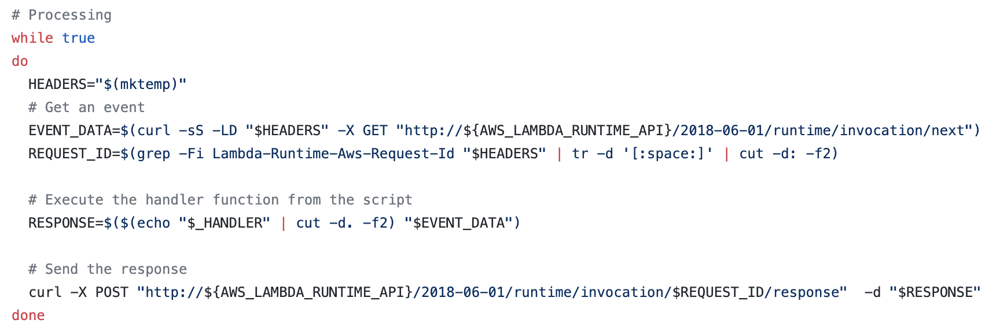
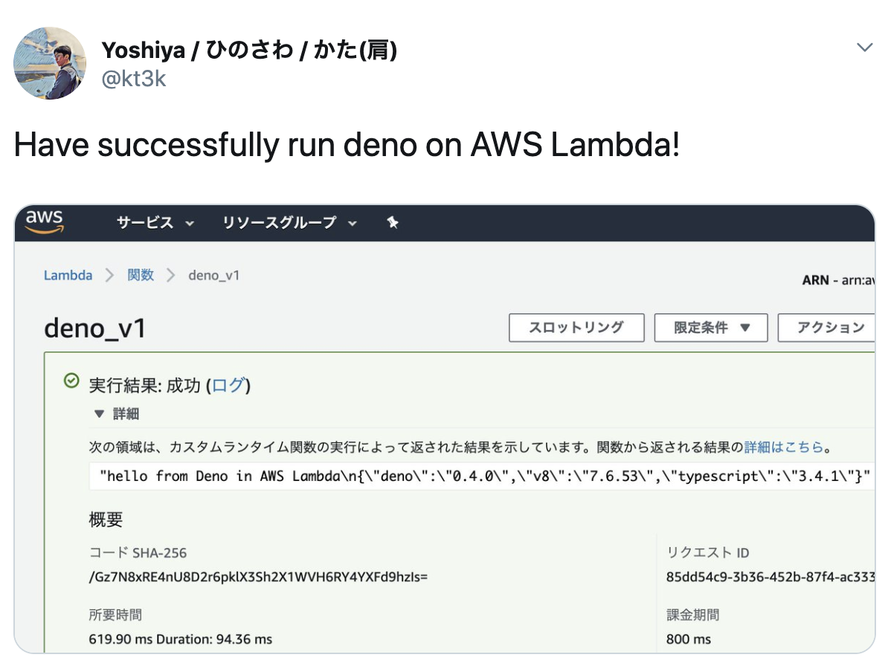
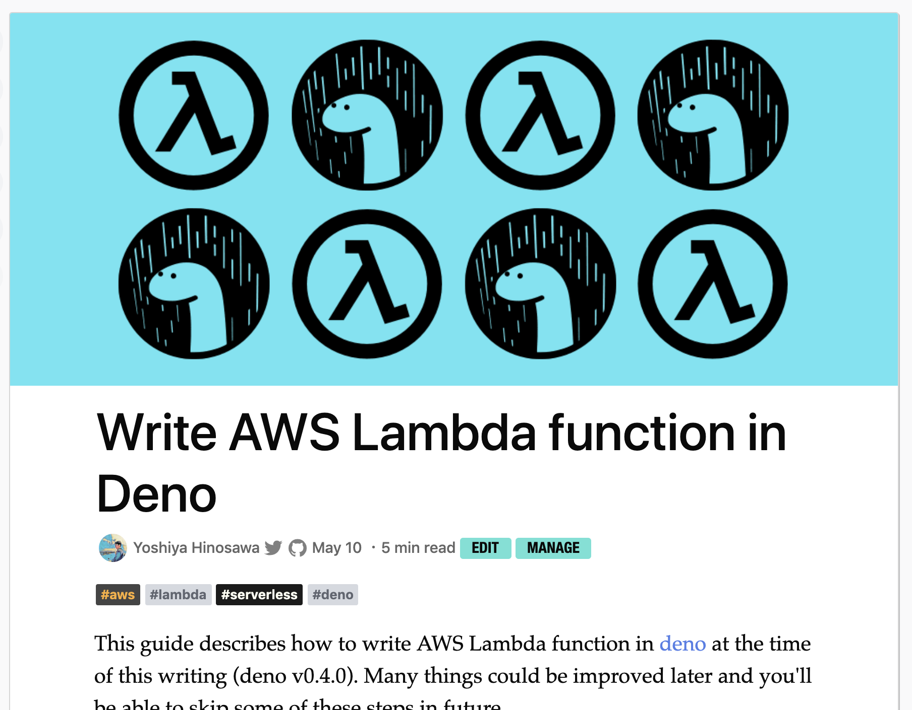
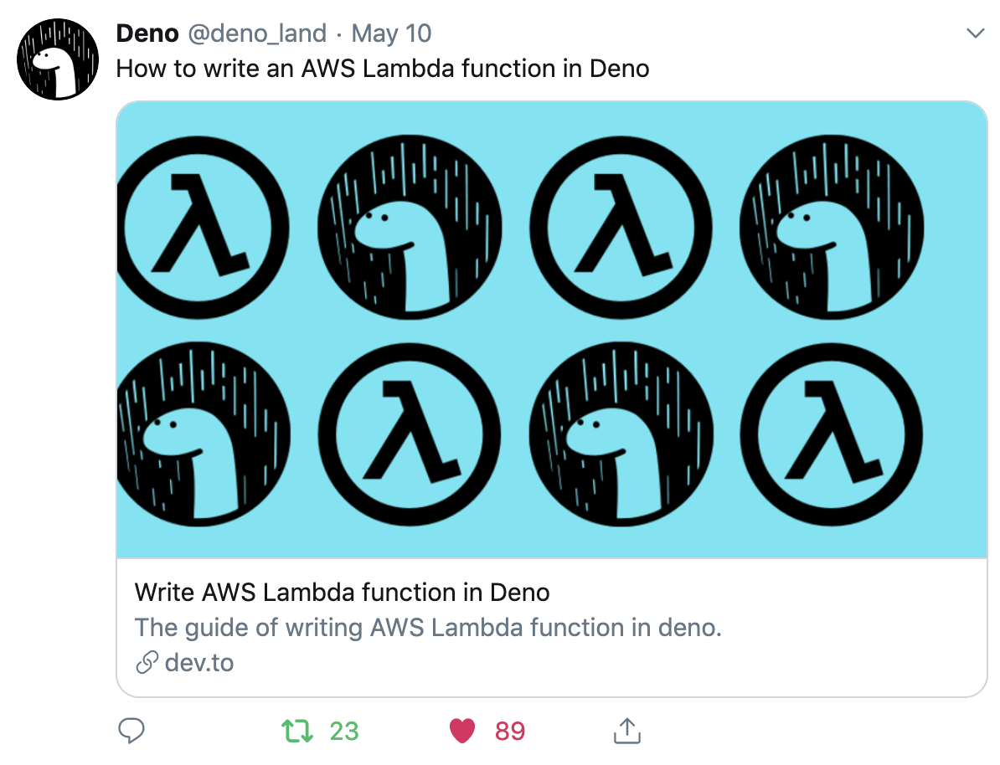

class: middle, center # Deno で Serverless --- # [Issue 1456](https://github.com/denoland/deno/issues/1456)  --- class: middle, center 高需要  --- class: middle, center 結構古い issue <img width="800" src="assets/img/1456a.png" /> ... だけど, まだ Open --- class: middle, center 🤔 Deno で Serverless って出来るの? --- 自己紹介 @kt3k <img width="150" src="assets/img/hino-izu.jpg" style="border-radius: 50%;"/> 日野澤歓也 (ひのさわよしや) - フリーランス の フロントエンドエンジニア (React 書いてます) - 主な職場 & --- class: middle, center  --- class: middle, center 🤔 今のLambda はどんな言語でも書けることになっているらしい --- class: middle, center [チュートリアル](https://docs.aws.amazon.com/lambda/latest/dg/runtimes-walkthrough.html)をやってみた --- class: middle, center  やたらとシェル力の高い[サンプルスクリプト](https://gist.github.com/kt3k/17e29c36bd8743289afdf21049906ff4) --- class: middle 解読してみると - ハンドラ (lambda function) を初期化して - GET /runtime/invocation/next でリクエストを受け取って - POST /runtime/invocation/:request_id/response にレスポンスを返せば良いっぽい --- class: middle, center Deno でやってみる --- ```code export DENO_DIR=/tmp/deno_dir echo " import { $HANDLER_NAME } from '$LAMBDA_TASK_ROOT/$HANDLER_FILE.ts'; const API_ROOT = 'http://${AWS_LAMBDA_RUNTIME_API}/2018-06-01/runtime/invocation/'; (async () => { while (true) { const next = await fetch(API_ROOT + 'next'); const reqId = next.headers.get('Lambda-Runtime-Aws-Request-Id'); const res = await $HANDLER_NAME(await next.json()); await (await fetch( API_ROOT + reqId + '/response', { method: 'POST', body: JSON.stringify(res) } )).blob(); } })(); " > /tmp/runtime.ts $SCRIPT_DIR/deno run --allow-net --allow-read /tmp/runtime.ts ``` [link](https://github.com/kt3k/lambda-deno-runtime-wip/blob/master/bootstrap) --- class: middle, center とりあえず, これをデプロイしてみたら無事動いた! 💪  --- ハマった点 - カスタムの Deno をビルドする必要がある - [GLIBC 2.18 問題](https://github.com/denoland/deno/issues/1658) - DENO_DIR を /tmp/ 以下にする必要がある - Lambda 環境では /tmp/ 以下にしか Write 出来ない --- 結構記事を書いて欲しいという反応が・・・ --- class: middle, center [記事化!](https://dev.to/kt3k/write-aws-lambda-function-in-deno-4b20)  --- class: middle, center なかなかの反応 <img width="700" src="assets/img/reaction3.png" /> --- class: middle, center 気づいたら公式も呟いてくれてた 😺  --- たくさんの残課題 - GLIBC 2.18 問題の解決 - Lambda Runtime の CI をする - AWS SAM というの使うとできるぽい - Cloud Function 対応 - Azure Function 対応 - Now 2 deno-builder が作れそう(?) --- class: middle, center Deno x Serverless やっていくぞ! 💪 --- class: middle, center Fin 🦕